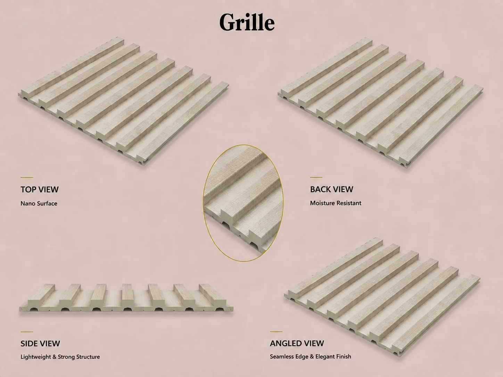
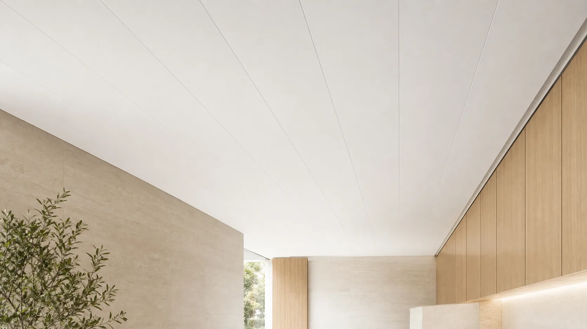

Can PVC Ceiling Panels Be Used on Walls?
PVC ceiling panels and PVC wall panels can look similar in a catalog, but buyers should not treat every profile as interchangeable. The correct choice depends on the intended surface, support system, span, finish, joint appearance, accessories and local project requirements.

PVC ceiling panels are selected and installed as part of a ceiling system, while PVC wall panels are selected for vertical wall coverage and the conditions of that surface. Some product families may share materials or visual finishes, but suitability cannot be decided from appearance alone. Confirm the exact SKU, profile construction, support spacing, installation direction and accessories with the supplier before ordering.
Can a ceiling panel work on a wall, or a wall panel on a ceiling?
Possibly, but only after the exact product and installation arrangement are checked. “PVC” identifies a material family, not a universal installation approval. A panel that looks acceptable on a sample board might have a joint, face finish or fixing detail that is unsuitable in the proposed orientation.
For a wall application, ask how the face handles expected contact and cleaning, how corners terminate, and whether the panel can be fixed to the actual wall substrate. For an overhead application, ask for the ceiling fixing detail, framing or battens, support spacing, treatment around light fittings and access panels, and any project-specific documentation. A salesperson's statement that the same color is available does not answer these construction questions.
If one SKU is marketed for both positions, request written confirmation that covers the precise profile and fixing system. Keep that confirmation with the drawing and approved sample so the installer and purchaser work from the same specification.

Begin with the approved application
Tell the supplier whether the product will be used on a ceiling, full-height wall, wainscot, feature wall or another surface. The installation orientation changes how the panel is supported and how its own weight, joints and finishing details are managed.
Do not assume that a panel promoted for one surface is automatically approved for another. Ask the supplier to identify which application belongs to the exact model being quoted and what installation information is available.
Compare profile construction and support
Nominal width and thickness do not describe the complete profile. Review internal ribs, joint geometry, edge consistency, unit weight and the distance between support points required for the system. A ceiling installation is especially sensitive to support layout and fixing because the panel is installed overhead.
Support spacing should come from the product and installation guidance for the specific project, not from a generic number copied from another profile. The substrate or framing must also be checked before work begins.
Review finish from the viewing position
Ceilings and walls are viewed under different angles and lighting. A glossy surface, printed pattern, embossed texture or visible joint can appear different when placed overhead. Join several samples and inspect them under the lighting expected in the room.
For walls, consider contact, cleaning and how corners or openings will be finished. For ceilings, review the relationship with lights, vents, access points and perimeter trims. These details often matter more to the completed result than the loose panel alone.
Plan trims and accessories as a system
The main panel is only one line in the order. List starts, ends, inside corners, outside corners, perimeter positions and transitions to other materials. Confirm that accessory colors and dimensions match the selected panel and installation detail.
For a distributor range, keeping the panel and trim system easy to explain can reduce confusion at the retail counter. Use clear model references and carton labels so ceiling and wall products are not mixed in storage or delivery.
Compare quotations without mixing two different systems
A low price per square metre can hide a missing trim set, a different effective coverage width or a shorter usable length. Ask both suppliers to quote the same installed area and list panel quantity, coverage after joining, accessory lengths, fixing components, packing unit and installation guidance separately. This gives the buyer a comparable bill of materials rather than two prices for unlike products.
For a first order, separate ceiling and wall lines on the purchase schedule even if the decorative finish matches. Record the exact model code, finish reference, batch or approved sample, quantity by length, and the cartons or bundles required for each. That makes receiving checks and later replacements easier.
Need to estimate panel quantity first? Use our coverage calculation method as a planning example, then replace its illustrative inputs with the selected PVC profile's actual dimensions. The calculation does not establish product suitability.
What to request before approving a sample
Request a connected pair of panels, not only one cut piece. The joined sample reveals the visible seam, effective face width, edge behavior and whether the printed or embossed pattern aligns. Compare it with the proposed trim and inspect it under both daylight and the intended artificial light.
Ask for a profile drawing that identifies overall width, effective width, thickness, length and unit weight. Ask for the installation guidance applicable to the same model. Where the destination or project requires a test report, check that its product identity and mounting configuration match the proposed use; an unrelated wall-profile report should not be presented as proof for an overhead system. This guide explains how to read a panel fire-test report.
For range planning, the Luvie catalog section helps identify candidate product families. Final specifications, accessories and documents should still be confirmed for the chosen SKU before purchase.
Check environmental and regulatory requirements
Share the room type, indoor conditions, cleaning method, expected temperature range and destination market. Kitchens, bathrooms, commercial interiors and public projects may have different documentation or installation requirements.
Request reports only for the exact product or tested construction where relevant. Avoid broad claims that every PVC panel has the same fire, emission, moisture or hygiene classification. Destination requirements should be confirmed at the project and SKU level.
Buyer comparison checklist
- Exact ceiling or wall application
- Approved SKU and profile drawing
- Net coverage, length and unit weight
- Support, fixing and substrate requirements
- Joint appearance under room lighting
- Perimeter trims, corners and transitions
- Lighting, vents and access openings
- Applicable product and destination documents
- Separate labels and packing for each model
Questions buyers ask
Can a PVC wall panel be installed on a ceiling?
Only when the supplier and project team confirm that the exact model, support system and fixing method are suitable for that ceiling application.
Are ceiling and wall panel thicknesses the same?
They can vary by product family. Thickness alone is not enough; compare profile construction, weight, joint design, support requirements and intended application.
Can the same decorative finish be ordered for both?
Matching finishes may be possible within selected ranges, but color, gloss and pattern should be approved on physical samples for the exact products.
What information should I include in an inquiry?
Send the country, room type, surface dimensions, installation position, preferred finish, target size and estimated quantity, together with drawings or reference photos where available.
Confirm the right PVC panel system for your application.
Share your market, ceiling or wall use, dimensions, finish and estimated quantity. Luvie can organize relevant product and sample options for further discussion.
WhatsApp +30 6947135317Related regional guide: PVC ceiling installation checks for Brazil.